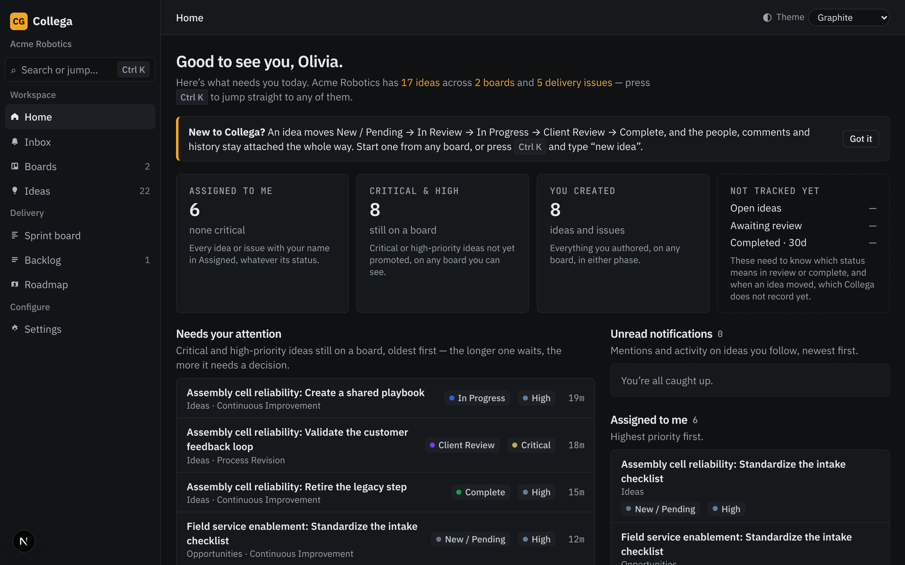
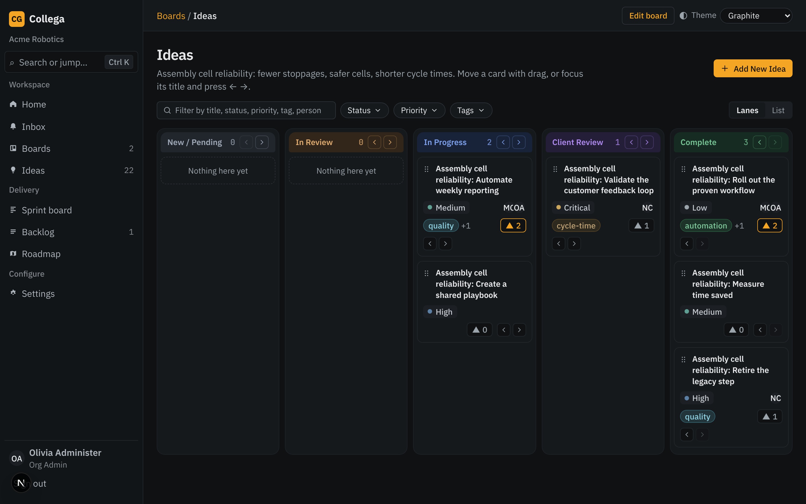
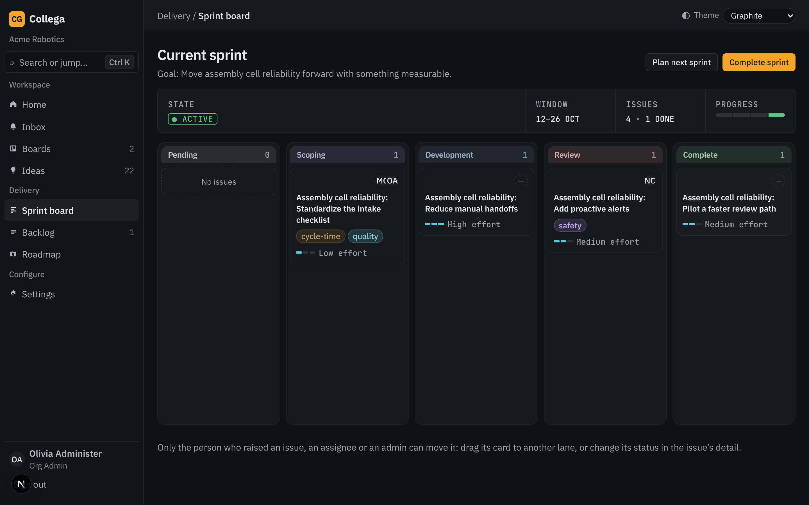
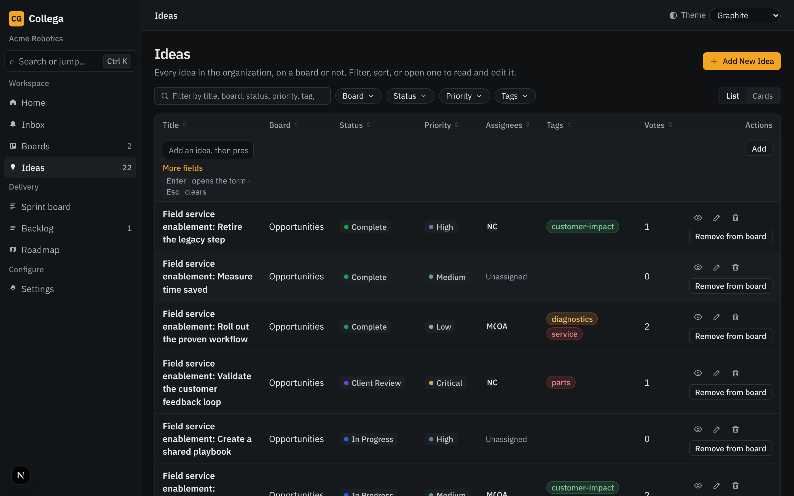
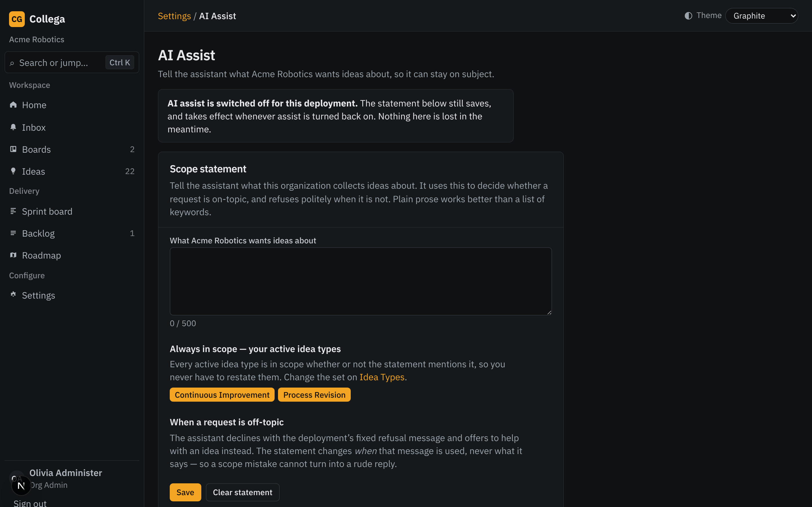

Capture ideas, rank them with your team, and carry the winners straight into delivery — with the people, comments and history attached the whole way.

Boards, lists and a one-keystroke “new idea” so nothing stays in a chat thread.
Votes, priority, tags and assignees show what the team actually wants.

Lanes from New to Complete. Drag a card or use the keyboard to move it.

Promote an idea to an issue, size the effort and track the sprint.

Filter by board, status, priority and tags; list or card view.

Turn a rough thought into a clear, complete idea. Admins control the settings.
Org Admin, member and read-only roles; custom fields, field sets and idea types; user import.
Five themes — Graphite dark and Terrazzo light among them — remembered per browser. Press Ctrl K to jump anywhere.
Book a 30-minute walkthrough, pilot with one team, scale to the organization.